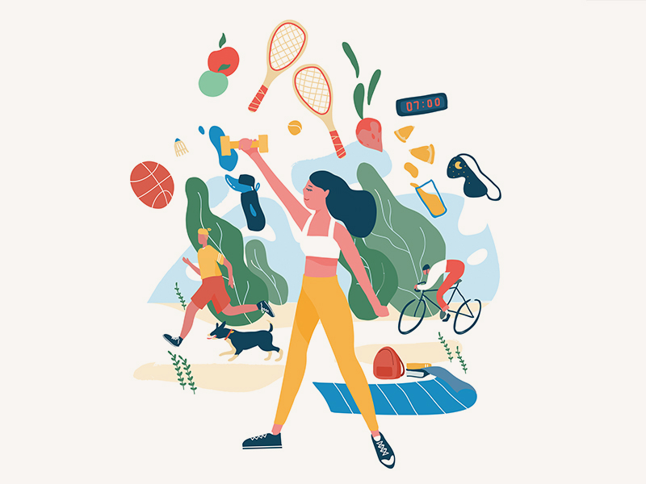

Les dangers de
l'Insomnie

L'insomnie peut aggraver l'anxiété et la dépression. Le manque de sommeil affecte l'humeur et la gestion du stress, augmentant le risque de troubles mentaux.

NuitsApaisées est votre ressource pour retrouver un sommeil réparateur. Découvrez des conseils pratiques, des techniques de relaxation et des astuces pour améliorer la qualité de vos nuits. Rejoignez-nous pour transformer vos soirées en moments de sérénité et de bien-être.
1.
2.
3.
Avant de découvrir NuitsApaisées, je luttais contre l'insomnie, ce qui affectait mes études. Grâce aux conseils du site sur les habitudes de sommeil et la relaxation, j'ai pu établir une routine saine. Maintenant, je dors mieux et je suis plus concentré à l'école. Merci, NuitsApaisées !